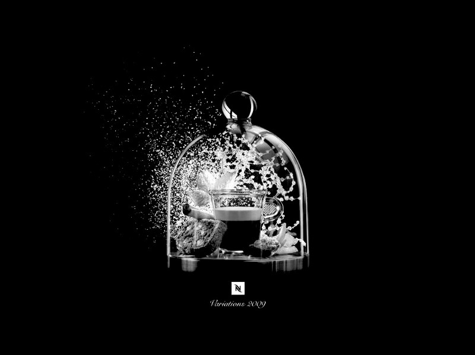

A little while ago, I read a post on Sebastian Marshall’s blog about cutting caffeine, in which goes into the benefits and a method he uses for quitting coffee. He suggests cycling off it to reset your tolerance every so often. I figured that was a really good idea since I’d gotten to the point where in the morning I needed a coffee to feel normal, it was a good time to do something about it. Sebastian’s method of taking caffeine pills I found a little extreme. There’s a certain aesthetic to drinking coffee that I really enjoy and trying to replace it with green tea and pills wasn’t going to work. Sebastian may have a mental strength I simply don’t possess so I needed to offset the caffeine with altering the experience much.
I also don’t really need to be incredibly specific about the mg doses of caffeine I’m giving myself, this seemed like a needless complex way off essentially weaning, so I figured I come up with more maintainable approach.
My solution was pretty straight-forward. Simply wind down the amount of caffeinated coffee you drink.
Also, If you want to go totally caffeine free, take a look at `Teeccino `__ to wind-down even further. Frankly I didn’t bother with this step but you may want to if say you have doctors orders to steer totally clear from caffeine.